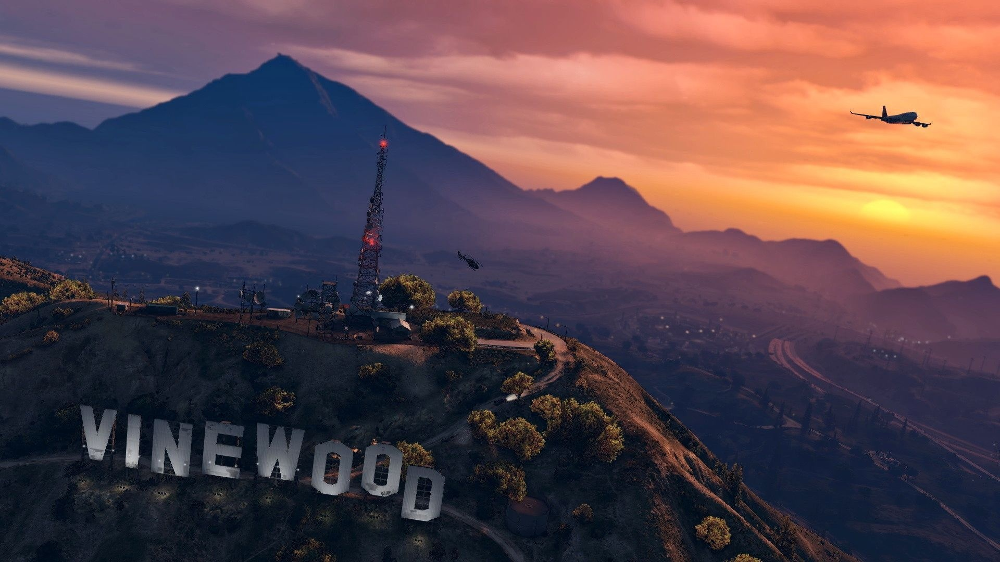
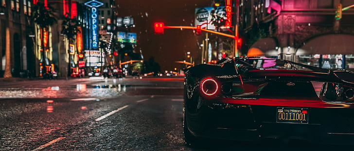
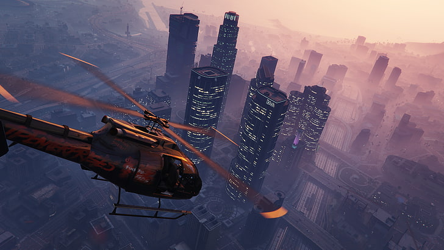
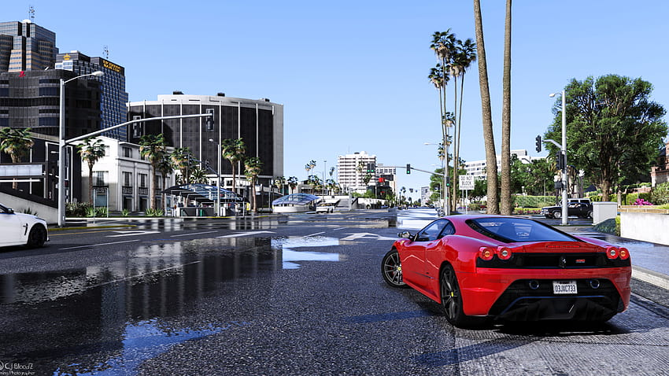

Nổi tiếng nhưng cũng tai tiếng
1045 commentGrand Theft Auto V – Grand Theft Auto, cái tên gắn liền với tuổi thơ của không ít game thủ, sở hữu độ “tai tiếng” mạnh đến nỗi rất nhiều bậc phụ huynh cũng phải ái ngại khi nghe đến tên.
Đây cũng là một trong những loạt game góp phần giúp cho nền công nghiệp game lấy được “chữ số thứ 10” trên tờ đô-la Mỹ.
Thưởng lãm Santos đầy sức sống mê hoặc
Hãy làm rõ việc đầu tiên: Grand Theft Auto V không hề sở hữu một nền đồ họa “next-gen” thứ thiệt. Mặc dù phiên bản PC “hưởng xái” khá nhiều hiệu ứng tối tân, từ đổ bóng chi tiết và hiệu ứng phản chiếu (reflection) phức tạp, nhưng trò chơi vẫn không thể nào che lấp được cái “gốc rễ” của mình. Grand Theft Auto V là một trò chơi được phát triển chính gốc cho hệ máy console đời cũ, và điều đó được thể hiện rõ nhất ở nhiều yếu tố: vân bề mặt ở nhiều khu vực cực kỳ thô (đặc biệt là ở nội thất xe cộ), cây cối và bụi rậm xấu xí đến mức nực cười, hiệu ứng “ragdoll” thụt lùi so với Grand Theft Auto IV và Max Payne 3…
Thế nhưng, bấy nhiêu đó có khiến cho phần nhìn của Grand Theft Auto V kém cỏi toàn tập hay không? Loạt game Grand Theft Auto chưa bao giờ là người đi tiên phong trong công nghệ đồ họa, mà thế mạnh chính của dòng game này nằm ở cách mà Rockstar Games đầu tư vào “cái hồn” của một thế giới mở rộng lớn. Grand Theft Auto V không phải là ngoại lệ.
Ngay từ những giây phút đầu tiên trong Grand Theft Auto V, Los Santos đã hoàn toàn “hớp hồn” người viết, không phải bởi vì nó “lộng lẫy” theo phong cách “next-gen”, mà là vì nó mang đến một cảm giác “tương phản” rõ rệt ở từng địa danh, cùng với một sức sống lạ lùng khó có thể tìm thấy được ở bất cứ tựa game thế giới mở nào khác.
Phía đông Los Santos, cũng là “quê nhà” của một trong ba nhân vật chính – Franklin Clinton, toát lên sự nhếch nhác và tồi tàn: những căn nhà xập xệ chỉ với một tầng, các băng đảng đường phố lảo rảo trên khắp các nẻo đường, nhạc rap ầm ĩ đến chói cả tai… Và vẫn còn đó đường ray xe lửa ngăn cách hai khu phố chính, những con đường quen thuộc và khu phố Groove Streets vẫn chưa thay đổi nhiều kể từ khi Carl Johnson “làm loạn” tại đây 23 năm về trước.
Lối chơi quá táo bạo
Trái ngược hẳn với khu vực phía đông, Vinewood hiện lên với một bộ mặt lộng lẫy, tráng lệ, và cũng là đích đến hoàn hảo của những “giấc mơ Mỹ”. Một thành phố “không ngủ”, với những căn biệt thự sang trọng trải đều từ đồng bằng lên đỉnh đồi, các siêu “xế hộp” lượn vòng quanh không thể nào đếm xuể, và khi màn đêm buông xuống, những ánh đèn đồng loạt “thức giấc” và tiếp tục “cuộc vui”. Hạt Blaine, địa phận tách biệt với thành phố Los Santos bằng ngọn núi Chiliad hùng vĩ, là một vùng đồng quê tĩnh lặng với số lượng dân cư ít ỏi ở bốn thị trấn, trong đó có Sandy Shores và Paleto Bay.
Nuôi “tham vọng” biến Los Santos trở thành một thành phố giả tưởng chân thực và đầy sức sống nhất từ trước đến giờ, thế nên Rockstar Games không ngần ngại đưa vào những tiểu tiết thú vị, rất gần gũi mà ta hay gặp trong đời thường. Những người đi đường tại Vinewood phần lớn đều cực kỳ thân thiện, chào hỏi khi bạn mở lời, vẫy tay khi đang nghe điện thoại, hay thậm chí là ngoái đầu lại và nhìn bạn.
Nhân vật mang sắc thái đối lập
Cốt truyện của Grand Theft Auto V khá rời rạc trong khoảng 2/3 thời lượng giữa game và trò chơi cũng thiếu vắng một nhân vật phản diện thực sự ấn tượng. May mắn thay, câu chuyện trong Grand Theft Auto V được “vớt vát” bằng sự khắc họa đầy cá tính của ba nhân vật chính. Có lẽ nhân vật mà người viết ưa thích nhất trong Grand Theft Auto V là Micheal De Santa.
Cũng chính bởi vì “dòng đời xô đẩy”, luôn dồn Michael vào bước đường cùng khiến người viết vừa buồn cười vừa cảm thông. Có lẽ, chính mạch truyện phụ xoay quanh gia đình nhà De Santa (hoặc “Townley”) là động lực duy nhất để người viết tiếp tục cốt truyện chính của Grand Theft Auto V. Franklin Clinton ban đầu tạo nên ấn tượng của một anh chàng “gangster” da đen thông thường với một khát khao duy nhất: được nằm trên một đống tiền và dạo vòng quanh Los Santos trên chiếc xe thể thao xịn.
Nhưng khác với những người xung quanh mình, Franklin nhận ra rằng những tên du côn chả bao giờ làm được tích sự gì, thế nên cuộc gặp gỡ với Michael chính là cơ hội đổi đời “có một không hai” của Franklin. Franklin là mẫu nhân vật mà ai cũng có thể tin tưởng và trông cậy vào, và luôn hoàn thành tốt công việc của mình.
Những trải nghiệm và thú tiêu khiển mới
Phiên bản PC của Grand Theft Auto V hội tụ đủ tất cả các “tinh hoa” từ những phiên bản trước, và thực phí thời gian nếu như chúng ta nhắc lại những thứ mà đã được bàn “nát bét” trước đây. Vậy, Grand Theft Auto V có điểm gì mới ngoài phần đồ họa được nâng cấp rõ rệt? Thứ nhất, giờ đây người chơi đã có thể trải nghiệm trò chơi ở bất kỳ mức khung hình nào mà mình muốn, không chỉ giới hạn ở mỗi con số 60fps.
3 năm chờ đợi không hề uổng phí chút nào, bởi độ tối ưu của trò chơi phải nói là cực kỳ tốt (nhất là sau cái mớ “lộn xộn” mang tên Grand Theft Auto IV). Những cỗ máy PC với cấu hình trung bình-thấp vẫn có thể thoải mái “lướt” vi vu, trong khi các PC “khủng long” sẽ được dịp “thử lửa” Grand Theft Auto V với các thiết lập đồ họa cũng “khủng bố” không kém.
Trong đó, “Director Mode”, đúng như tên gọi, cho phép người chơi được làm một “đạo diễn” đích thực khi có thể sắp xếp bối cảnh, nhân vật (hay trong trường hợp này là “diễn viên”), thời gian, hiệu ứng ngày-đêm hay thời tiết… “Director Mode” giống như một chế độ chơi “tự chọc ngoáy theo ý thích” và người chơi hoàn toàn có thể tự sắp đặt “kịch bản” theo đúng ý của mình (mặc dù vẫn còn một số hạn chế mà người chơi không thể “chạm tay” vào và chỉnh sửa được). Cá nhân người viết không có trí tưởng tượng phong phú và “mát tay” như rất nhiều thành viên của cộng đồng Grand Theft Auto, thế nên người viết xin nhường lại “sân chơi” dành cho tất cả các bạn.
Tổng Kết
Là một game hoàn toàn có thể giải trí nhưng cũng mang đến những trải nghiệm mới lạ, GTA V thật sự xứng đáng với số tiền và thời gian 4 năm chờ đợi phát triển của game thủ toàn thế giới

topgamer June 21, 2024
Game hay nè, mới mua hôm qua. Năm nay 3 nhân vật có nhiều thay đổi lắm
Replysuperstar_9xSeptember 11, 2023
Đồ họa đẹp là thích à.
Reply